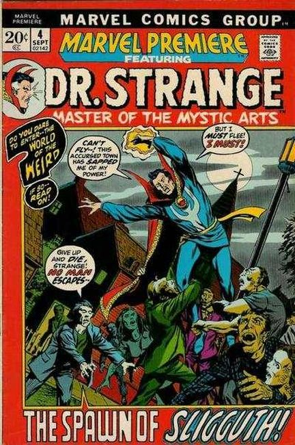

Series: Marvel Premiere
Characters: Doctor Strange
Released: Aug 1972
Publisher: Marvel Comics
Illustrator: Barry Smith, Frank Brunner
Writer: Roy Thomas, Archie Smith
Story: The Spawn of Sligguth!
Dr. Strange is visited by a man named Ethan Stoddard who has come seeking Dr. Strange's help. He explains that his fiance Bethel Doan studies the occult. Something strange has happened to her while studing the Thanatosian Tomes.
Traveling to Starkesboro with Ethan, Dr. Strange soon finds that the people of this town are becoming reptilian, and that they worship the creature known as Sligguth. When Stoddard learns that his fiance had suffered the same fate, he rushes to Strange who is investigating the shrine of Sligguth.
There the two are attacked by the townspeople, when suddenly Stoddard changes into one of them as well. Stoddard tells Strange that he was used to lure Strange to town. During Stoddard's surprise attack, Strange is knocked out.When he comes too, he finds that he is to be thrown into the labyrinth under the church as sacrifice to Sligguth!